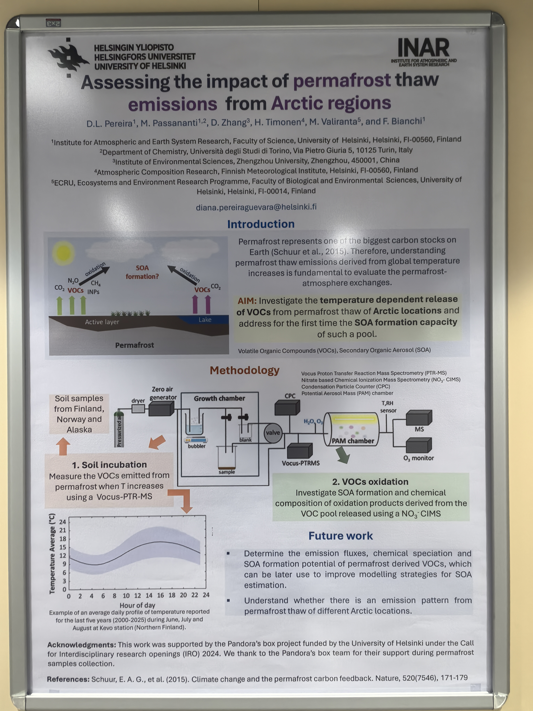

VOCs 来源与环境影响
解析挥发性有机物的组分与来源，评估其化学反应活性、臭氧与 SOA 生成潜势及健康风险。
01 / RESEARCH
从污染来源，到化学过程，再到控制策略。
解析挥发性有机物的组分与来源，评估其化学反应活性、臭氧与 SOA 生成潜势及健康风险。
关注 PAN、HONO 和 HCHO 等关键物种，结合观测与模型研究光化学过程、前体物敏感性及氧化能力。
结合 OBM 与 ARCA box 模型分析臭氧和有机气溶胶形成，探索前体物减排对复合污染的影响。
方法与技术
GC–MS/FIDVocus PTR-MSPAM chamberNO3-CIMSEPA PMFOBM / ARCA boxPython / R
芬兰合作研究 · 协助工作
在赫尔辛基大学期间，我协助开展 Opening Pandora’s Box 项目中的相关研究。该工作关注北极地区永久冻土样品在温度变化下释放的 VOCs，以及这些物种氧化后形成 SOA 的能力。
研究结合土壤培养、Vocus PTR-MS 测量、PAM chamber 氧化实验和 NO3-CIMS 氧化产物分析。
合作海报
D. L. Pereira, M. Passananti, D. Zhang, H. Timonen, M. Väliranta, F. Bianchi.
02 / PUBLICATIONS
按正式卷期年份排列；第一作者、共同第一作者与通讯作者单独标注。
03 / EXPERIENCE
化学学院 · 分析化学
导师：张瑞芹教授
大气科学研究
环境科学
环境科学研究
化学
国家重点研发计划 · 2024YFC3713700
国家重点研发计划 · 2017YFC0212400
2021 — 2023
永久冻土融化对环境与人类健康的风险评估
赫尔辛基大学 · 项目周期：2025—2027
04 / CONTACT
欢迎就大气观测、VOCs 来源解析、光化学过程与污染控制开展交流。
郑州大学化学学院 · 中国河南郑州